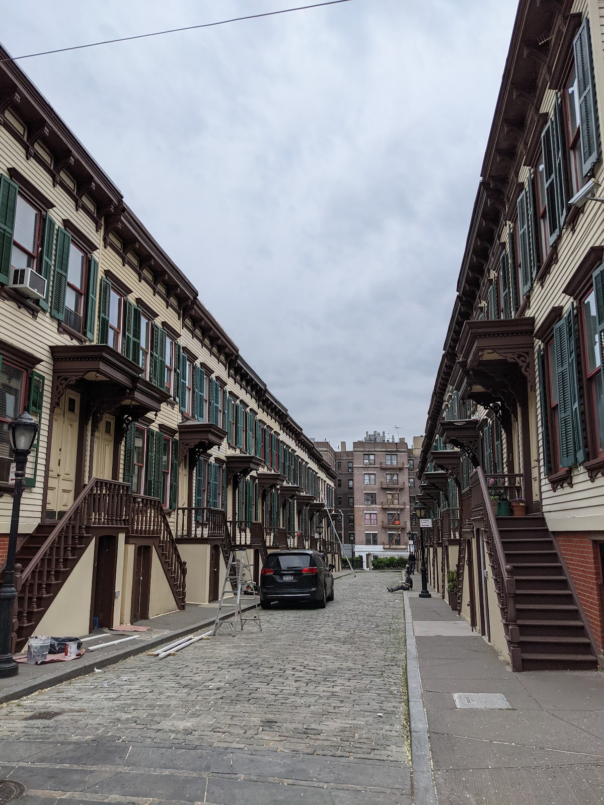
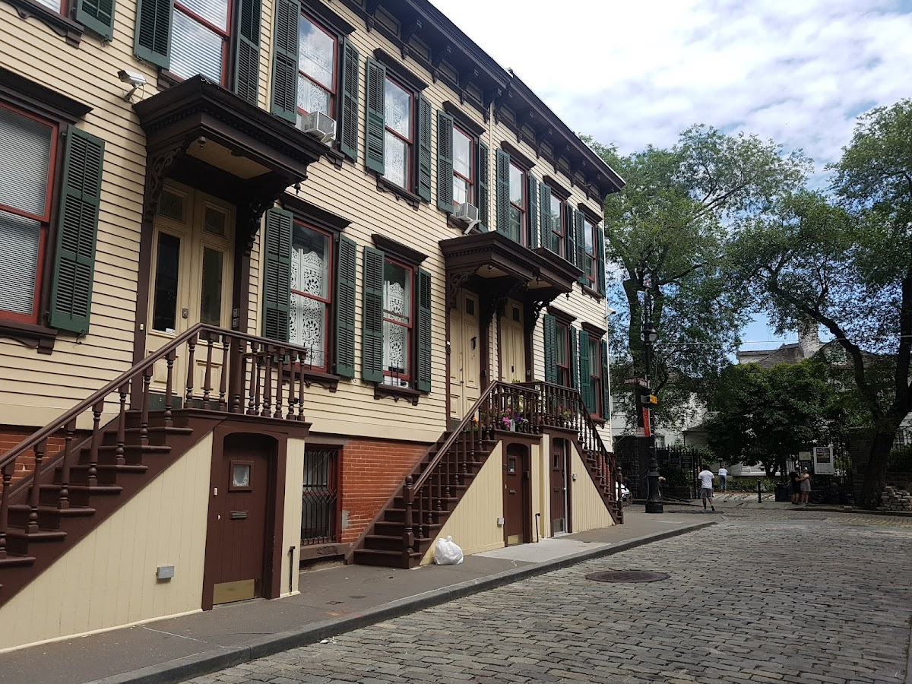
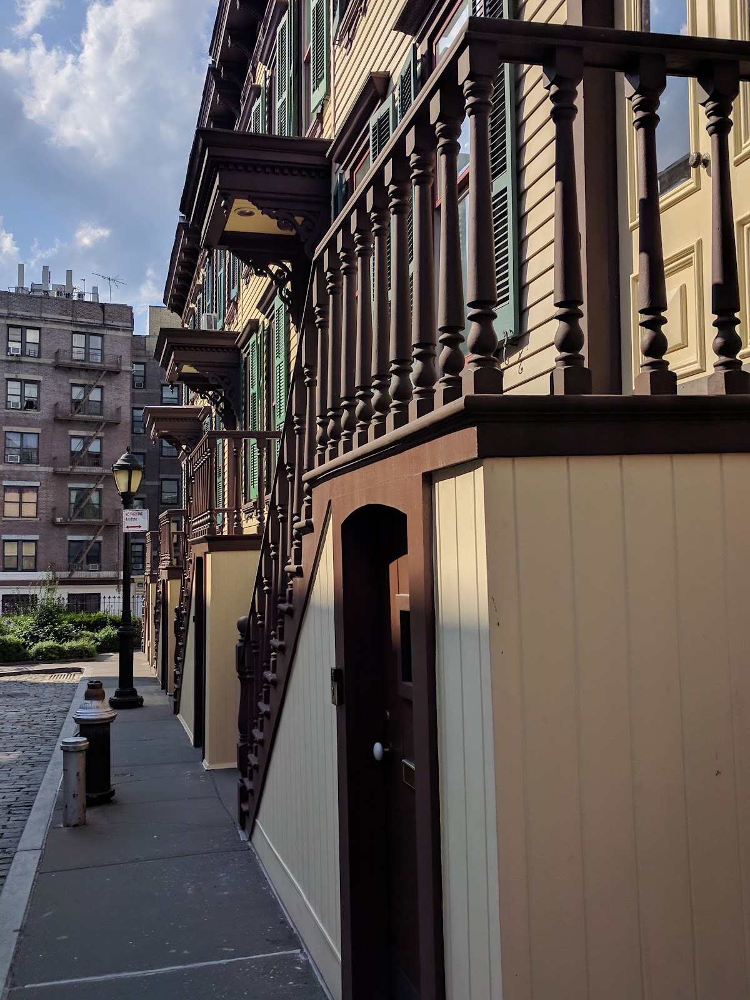
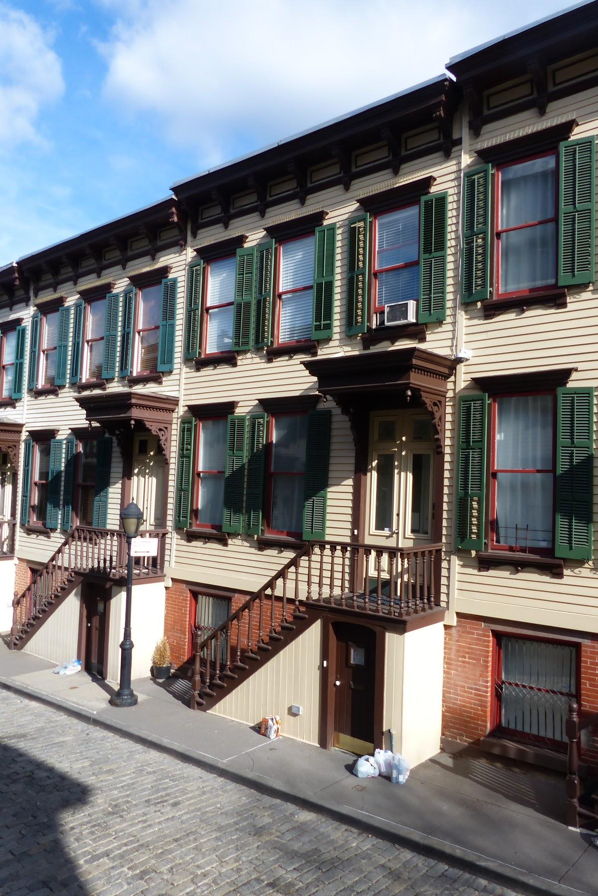
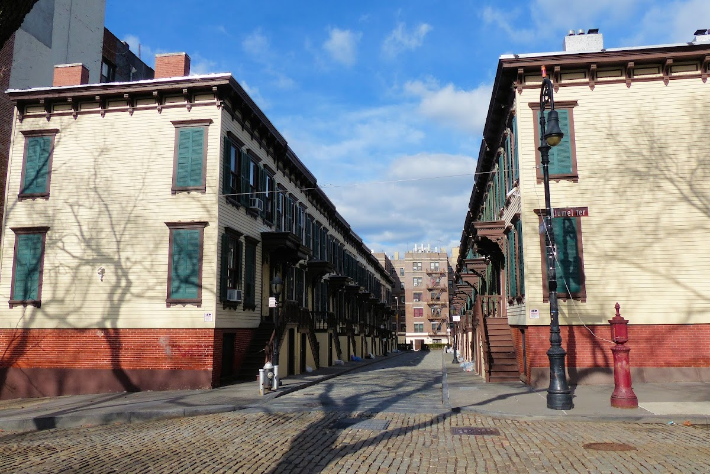

Courts & communities
Sylvan Terrace
A cobblestone street in Washington Heights, lined with wooden row houses.
Background
Sylvan Terrace was built in the 1880s as part of the Morris-Jumel Mansion estate. The houses were originally intended for working-class families but have since been restored and are now part of a historic district, reflecting the area's 19th-century charm.
Original AI-assisted background; not independently verified.
From the original map
Sylvan Terrace, a charming cobblestone street in Upper Manhattan’s Washington Heights, was developed in 1882 by William Paulding Jr. as part of the Morris-Jumel estate, originally the site of James Jumel’s 1765 mansion. Designed by architect Gilbert Rantus Bishop, this single-block enclave between West 160th and 161st Streets features 20 identical two-story wooden row houses with brick foundations, built in a simplified Queen Anne style. Intended as affordable housing for working-class tenants like maids and coachmen, the homes replaced earlier farm structures after Paulding subdivided the land following Jumel’s death. The name “Sylvan” nods to the wooded, rural feel of the area at the time, though it’s now a rare surviving frame-house street in Manhattan. By the early 20th century, the terrace fell into disrepair, but its proximity to the Morris-Jumel Mansion—George Washington’s 1776 headquarters—helped it gain recognition. Designated a New York City Landmark in 1975 and part of the Jumel Terrace Historic District, it was restored in the late 1970s by the Landmarks Preservation Commission and local owners. Today, these gaslit homes, painted in pastel shades, are prized residential properties, with sales—like No. 14 in 2023 for $1.1 million—reflecting their historic allure and scarcity.
Homes and shared residential spaces may be private. View from public streets unless entry is clearly permitted; map pins are reference points, not confirmed entrances.
Nearby places
- Hamilton Terrace0.9 mi ↗
- Strivers Row1.2 mi ↗
- 116 Pinehurst1.3 mi ↗
- Cliff House (Pumpkin House)1.4 mi ↗
Straight-line distances, not walking routes.
Discussion & corrections





Photo credits
kae sato, Andrea M., Lexi Zotomayor, Ariano Gomes, Slava Shpigel, Ari Miller, Arpit Vaidya40.83472, -73.93939 · Explore the surrounding area ↗